Geoprocessing is a fundamental aspect of working with geospatial data, allowing you to manipulate, analyze, and derive new spatial information from vector datasets. In this tutorial, you’ll learn how to perform common geoprocessing tasks using the GeoLattice library, which integrates GeoPandas and Shapely for efficient and intuitive spatial analysis in Python.
We’ll explore tools for selecting, clipping, dissolving, intersecting, and constructing new geometries, providing practical examples for each geoprocessing operation.
Overview
Geo-processing is a GIS operation used to manipulate spatial data. This tutorial covers the common desktop geoprocessing tools for vector layers with GeoLattice, which uses GeoPandas and Shapely.
Shapefiles are opened with open_vectors_data(). Maps use plot_layer(), plot_pair(), and style_axes() from geolattice.viz. The geoprocessing tools are:
Operation
Function
Select features from the attribute table
filter the GeoDataFrame
Clip
clip()
Intersect
intersect()
Union
union(), or a row bind when many files share one attribute table
Dissolve
dissolve()
Erase
erase()
Convex hull
convex_hull()
Buffer
buffer()
The notebook is organized in three parts:
Load and inspect data: US states, counties, soil samples, streets, and the Yellowstone boundary.
Overlay tools: clip, union, dissolve, intersect, and erase.
Geometry construction: convex hull and buffer on polygons, lines, and points.
Sample files live in Data/00_shared/vector_data/USA. Written outputs land in Data/00_shared/vector_data/output_folder.
Setup
The next cell finds the repository root, puts it on the import path, applies the tutorial map style, and defines read_layer for shapefiles under Data/00_shared/vector_data/USA.
Geoprocessing calls use clip, union, dissolve, intersect, erase, convex_hull, and buffer from geolattice.vector. Maps use plot_layer, plot_pair, and style_axes from geolattice.viz.
Installation. This notebook needs installation option 1 (vector, raster, CRS and visualization): pip install "geolattice[core]". See “Installation options” in the GeoLattice README.
Code
# Display matplotlib figures inline in this Jupyter notebook.%matplotlib inline# Standard library: path search on sys.path and temporary output folders.import sys # mutate sys.path so geolattice can be imported from the repo rootimport tempfile # create a throwaway folder for written shapefilesimport warnings # available if a cell needs to silence noisy library warningsfrom pathlib import Path # filesystem paths for data and image folders# Third-party GIS / data / plotting stack used throughout the notebook.import geopandas as gpd # GeoDataFrame constructors and CRS handlingimport matplotlib.pyplot as plt # figure and axes creation for custom mapsimport numpy as np # numeric arrays for hull coordinatesimport pandas as pd # tabular display options and concat for row-binding layersfrom IPython.display import display # rich table previews in the notebookfrom scipy.spatial import ConvexHull # vertex order for a convex envelope of points
Code
# ===================================================================# Setup and helpers for geoprocessing and maps.# Walk up from the working directory to the repo root, import GeoLattice tools,# point DATA/IMAGES at the sample folders, and define read_layer().# ===================================================================# Resolve the current working directory to an absolute Path.ROOT = Path.cwd().resolve()whilenot (ROOT /"Data"/"00_shared"/"vector_data").is_dir():if ROOT.parent == ROOT:raiseFileNotFoundError("Could not find Data/00_shared/vector_data from the working directory.") ROOT = ROOT.parentsys.path.insert(0, str(ROOT))# Geoprocessing helpers exported from geolattice.vector.from geolattice.vector import (buffer, # distance buffer around features clip, # cookie-cut overlay that keeps attributes of the input layer convex_hull, # smallest convex polygon containing points dissolve, # aggregate geometries that share a group key erase, # remove the part of a layer that falls inside another polygon intersect, # keep overlapping pairs and attributes from both layers open_vectors_data, # open a shapefile (or other vector source) as a dataset union, # overlay union of two layers)# Shared map styling helpers from geolattice.viz.from geolattice.viz import EDGE, FACE, apply_map_style, plot_layer, plot_pair, style_axes# Sample vector data for this tutorial (US states, counties, etc.).DATA = ROOT /"Data"/"00_shared"/"vector_data"/"USA"# Banner and figure assets under the repository Images folder.IMAGES = ROOT /"Images"# Fail early if the expected folders are missing.assert DATA.is_dir(), DATAassert IMAGES.is_dir(), IMAGES # assert this folder exists# Keep printed attribute tables readable in the notebook.pd.set_option("display.max_columns", 12) # show up to 12 columnspd.set_option("display.max_colwidth", 48) # truncate long string cellspd.set_option("display.width", 120) # wider console wrapping for tables# Apply the shared GeoLattice map style (fonts, colors, spines).apply_map_style()# helper: open one shapefile under DATA as a GeoDataFramedef read_layer(relative):# short description of what read_layer returns"""Open one shapefile and return a GeoDataFrame without the reader fid."""# Build an absolute path under DATA from a relative shapefile path. path = DATA / relative# Open the vector dataset and convert it to a pandas/GeoPandas table.with open_vectors_data(path) as dataset: frame = dataset.to_dataframe() # attribute table plus geometry column crs = frame.crs # coordinate reference system of the layer# Drop the driver-added fid column when present so demos stay tidy.if"fid"in frame.columns: frame = frame.drop(columns="fid") # remove the driver-added fid column# Rebuild an explicit GeoDataFrame with the preserved CRS.return gpd.GeoDataFrame(frame, geometry="geometry", crs=crs)# Confirm which folders the notebook will read from / write near.print(f"Data folder: {DATA}")print(f"Image folder: {IMAGES}") # print a short status line
Data folder: /home/zia207/Github/GeoLattice/Data/00_shared/vector_data/USA
Image folder: /home/zia207/Github/GeoLattice/Images
Part 1: Load and inspect data
We will use the following files in Data/00_shared/vector_data/USA:
US State shape file (US_STATE.shp)
US County shape file (US_COUNTY.shp)
Point shape file of soil sampling locations (CO_SOC_data.shp)
Line shape file (Ononda_Street_PROJ.shp)
Boundary of Yellowstone National Park (Yellow_Stone.shp)
The notebook finds the repository root and reads every file from Data/00_shared/vector_data/USA.
The state boundaries of Colorado, Kansas, New Mexico, and Wyoming also sit in Data/00_shared/vector_data/USA/GP_STATE.
Load US state and county shapefiles
Code
# Load the national state and county polygon layers used in later overlays.us_state = read_layer("US_STATE.shp") # US state boundariesus_county = read_layer("US_COUNTY.shp") # US county boundaries# Report feature counts for a quick sanity check.print(f"States: {len(us_state)} Counties: {len(us_county)}")# Print the CRS name when one is attached to the state layer.print(f"CRS: {us_state.crs.name if us_state.crs isnotNoneelseNone}")
States: 49 Counties: 3108
CRS: NAD_1983_Albers
Plot them side by side
Code
# Side-by-side outline maps of the US state and county layers (no fill).plot_pair(us_state, us_county, ["US State", "US County"], fill=False)
# Preview the STATE attribute series (names used for attribute filters below).us_state["STATE"]
0 Alabama
1 Arizona
2 Colorado
3 Connecticut
4 Florida
5 Georgia
6 Idaho
7 Indiana
8 Kansas
9 Louisiana
10 Massachusetts
11 Minnesota
12 Missouri
13 Montana
14 Nevada
15 New Jersey
16 New York
17 North Dakota
18 Oklahoma
19 Pennsylvania
20 South Carolina
21 South Dakota
22 Texas
23 Vermont
24 West Virginia
25 Arkansas
26 California
27 Delaware
28 District of Columbia
29 Illinois
30 Iowa
31 Kentucky
32 Maine
33 Maryland
34 Michigan
35 Mississippi
36 Nebraska
37 New Hampshire
38 New Mexico
39 North Carolina
40 Ohio
41 Oregon
42 Rhode Island
43 Tennessee
44 Utah
45 Virginia
46 Washington
47 Wisconsin
48 Wyoming
Name: STATE, dtype: str
Part 2: Overlay tools
Clipping
Clipping spatial data is a basic GIS task. For vector data, it involves removing unwanted features outside of an area of interest. For example, you might want to do some geospatial modeling covering an area in New York state, but we may have data for the USA. In this case you need to apply a clipping function to remove the area outside of New York State. It acts like a cookie cutter to cut out a piece of one feature class using one or more of the features in another feature class.
Clipping
You can do this several ways. In this exercise, we will clip out other states or counties from the US State and County polygon shape files, except our area of interest (for example New York).
The most direct way to select an area of interest from the attribute table is a filter on the STATE field.
Code
# Filter New York features from the national layers and write the state boundary.# NY state boundaryny_state = us_state.loc[us_state["STATE"] =="New York"].copy() # one-row state polygon# NY countyny_county = us_county.loc[us_county["STATE"] =="New York"].copy() # all NY counties# Confirm how many features each subset retained.print(f"NY state features: {len(ny_state)}")print(f"NY county features: {len(ny_county)}") # print a short status line# Show the first rows of the county attribute table.display(ny_county.head())# Create a temporary directory for demo shapefile output.output_dir = Path(tempfile.mkdtemp(prefix="geoprocessing_"))# Target path for the written New York state boundary.ny_path = output_dir /"NY_STATE_BD.shp"# Persist ny_state as a shapefile for reuse outside the notebook.ny_state.to_file(ny_path)print(f"Wrote {ny_path}") # print a short status line
NY state features: 1
NY county features: 62
FIPS
x
y
REGION_ID
DIVISION_I
STATE_ID
COUNTY_ID
REGION
DIVISION
STATE
COUNTY
geometry
46
36057.0
1735811.102
2409536.493
1.0
2.0
36.0
57.0
Northeast
Middle Atlantic
New York
Montgomery County
POLYGON ((1725612.65 2416731.662, 1729853.60...
71
36093.0
1768117.621
2407434.527
1.0
2.0
36.0
93.0
Northeast
Middle Atlantic
New York
Schenectady County
POLYGON ((1751585.009 2396491.025, 1753807.9...
131
36015.0
1568845.615
2286060.403
1.0
2.0
36.0
15.0
Northeast
Middle Atlantic
New York
Chemung County
POLYGON ((1558752.111 2301410.105, 1567500.0...
204
36109.0
1584749.021
2324857.448
1.0
2.0
36.0
109.0
Northeast
Middle Atlantic
New York
Tompkins County
POLYGON ((1573557.136 2333695.351, 1570600.5...
205
36053.0
1638111.937
2388843.960
1.0
2.0
36.0
53.0
Northeast
Middle Atlantic
New York
Madison County
POLYGON ((1606334.986 2413095.395, 1611018.7...
Wrote /tmp/geoprocessing_ejw7ls_6/NY_STATE_BD.shp
After subsetting, ny_county retains both the geometry and the attribute information of the parent polygons.
Code
# Compare the New York state outline with its county polygons side by side.plot_pair(ny_state, ny_county, ["NY State", "NY County"], fill=False)
You can select multiple states with the same filter. The states below are Colorado, Kansas, New Mexico, and Wyoming.
Code
# Select four Great Plains states by name for the union / dissolve demos.gp_names = ["Colorado", "Kansas", "New Mexico", "Wyoming"] # target state names# Keep a copy of matching rows from the national state layer.gp_state_subset = us_state.loc[us_state["STATE"].isin(gp_names)].copy()# Outline map of the four selected states.plot_layer(gp_state_subset, "States of CO, KS, NM & WY", fill=False)
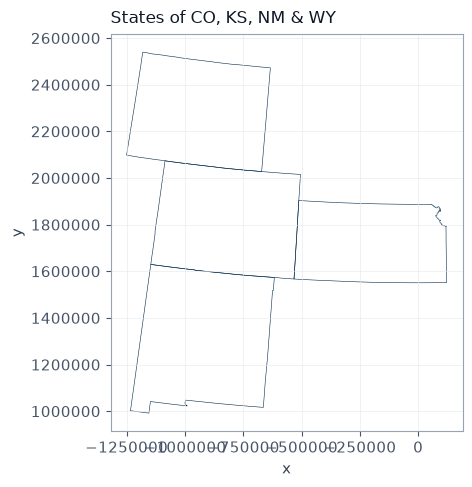
clip() cuts every county to the New York boundary and keeps the attribute table of the layer being cut. keep_geom_type=True drops points and lines created where polygons only touch.
A county whose polygon crosses the state line contributes only the piece inside New York, so the result can contain slivers of neighboring states. The attribute filter above keeps the 62 counties whose STATE value is New York.
Code
# Clip US counties to the New York state boundary with clip().# Clip the US county shape file with the NY State boundaryclip_01 = clip(us_county, ny_state, keep_geom_type=True) # keep polygons only# Count county pieces that survive the clip (may include border slivers).print(f"Clipped county pieces: {len(clip_01)}")# Preview STATE / COUNTY attributes after clipping.display(clip_01[["STATE", "COUNTY"]].head())# Map the clipped counties with thin outlines.plot_layer(clip_01, "Clip with clip()", linewidth=0.3)
Clipped county pieces: 68
STATE
COUNTY
0
New York
Montgomery County
1
New York
Schenectady County
2
New York
Chemung County
3
New York
Tompkins County
4
New York
Madison County
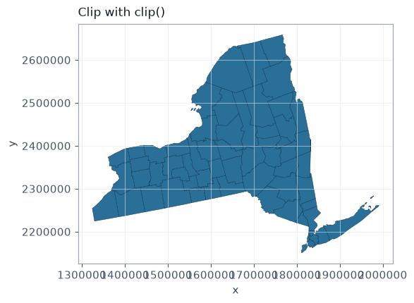
intersect() keeps each overlapping pair, with attributes from both layers. Shared field names receive _1 and _2 suffixes. STATE_1 is the New York mask and STATE_2 / COUNTY come from the county layer.
Code
# Intersect New York with US counties to keep attributes from both layers.clip_02 = intersect(ny_state, us_county, keep_geom_type=True) # drop non-polygon leftovers# Report how many overlapping pieces were returned.print(f"Intersection features: {len(clip_02)}")# Shared field names become STATE_1 (mask) and STATE_2 (county layer).display(clip_02[["STATE_1", "STATE_2", "COUNTY"]].head())# Map the intersection result.plot_layer(clip_02, "Clip with intersect()", linewidth=0.3)
Intersection features: 68
STATE_1
STATE_2
COUNTY
0
New York
New York
Richmond County
1
New York
New Jersey
Union County
2
New York
New York
Kings County
3
New York
New York
Queens County
4
New York
New Jersey
Hudson County
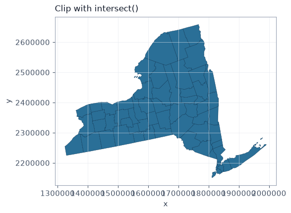
Union
Union combines two or more spatial objects and creates new features where the geometry and attributes of the input features are retained.
Union
We will use the state boundaries of Colorado, Kansas, New Mexico, and Wyoming. The shapefiles of these states are in Data/00_shared/vector_data/USA/GP_STATE.
union() here is an overlay union. Where two polygons overlap, the overlap becomes its own feature and carries attributes from both sides. Where they do not overlap, each input polygon is kept. Shared field names get _1 and _2 suffixes. These four states meet along borders rather than overlapping, so each state comes back as its own polygon. A shared border is a line, and keep_geom_type=True drops that line.
Code
# Read the four individual Great Plains state boundary shapefiles.co = read_layer("GP_STATE/CO_STATE_BD.shp") # Coloradoks = read_layer("GP_STATE/KS_STATE_BD.shp") # Kansasnm = read_layer("GP_STATE/NM_STATE_BD.shp") # New Mexicowy = read_layer("GP_STATE/WY_STATE_BD.shp") # Wyoming# Overlay-union Colorado with Kansas (overlap + unique parts of each).union_01 = union(co, ks)print(f"CO union KS: {len(union_01)} features") # print a short status line# Show the paired STATE fields created by the overlay.display(union_01[["STATE_1", "STATE_2"]])# Map the two-state union result.plot_layer(union_01, "Spatial union of CO and KS")
CO union KS: 2 features
STATE_1
STATE_2
0
Colorado
NaN
1
NaN
Kansas
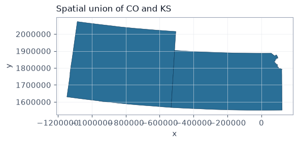
union() joins two layers at a time. When every file has the same fields, binding the rows keeps one column for each field and assigns a new feature id. pandas.concat does that, and Path.glob lists the shapefiles in the folder.
Code
# Row-bind every shapefile in GP_STATE into one layer with a shared schema.# List shapefiles under the GP_STATE folder in sorted order.files =sorted((DATA /"GP_STATE").glob("*.shp"))# Print each path relative to DATA for a readable checklist.print([str(path.relative_to(DATA)) for path in files])frames = [] # accumulate per-file GeoDataFramesuid =1# running feature id assigned across filesfor path in files:# Read one state boundary relative to the DATA folder. temp = read_layer(path.relative_to(DATA)) n =len(temp) # feature count in this file# Insert a unique fid column starting at the current uid. temp.insert(0, "fid", list(range(uid, uid + n))) uid += n # advance the id counter past this file's features frames.append(temp) # keep the annotated frame# Concatenate all frames into one GeoDataFrame with a shared CRS.gp_state = gpd.GeoDataFrame( pd.concat(frames, ignore_index=True), # stack rows; reset the index geometry="geometry", # name of the active geometry column crs=frames[0].crs, # reuse CRS from the first input file)# Show attributes without the geometry WKT clutter.display(gp_state.drop(columns="geometry"))# Map the combined four-state layer.plot_layer(gp_state, "Spatial union of CO, KS, NM & WY")
Dissolve aggregates features based on an attribute. It is a tool used regularly in spatial data processing.
Dissolve
One way to dissolve every polygon is to give them the same group. Cutting the centroid x coordinate across its full range makes a single bin, so every state is dissolved together.
dissolve() aggregates by one or more fields and unions the geometries in each group. With no by argument it dissolves the whole layer.
Code
# Dissolve all four states by putting every feature into one centroid-x bin.centroids = gp_state.geometry.centroid # one centroid point per state polygongp_binned = gp_state.copy() # work on a copy so the original layer stays intact# Cut centroid eastings into a single bin spanning min..max x.gp_binned["bin"] = pd.cut( centroids.x, # values to bin: centroid X coordinates bins=[centroids.x.min(), centroids.x.max()], # one interval covering the range include_lowest=True, # include the left edge so the min falls in the bin)# Dissolve geometries that share the same bin label.gp_dissolve_01 = dissolve(gp_binned, by="bin")print(f"Groups: {len(gp_dissolve_01)}") # print a short status line# Map the single dissolved outline.plot_layer(gp_dissolve_01, "Dissolved state boundary")
Groups: 1
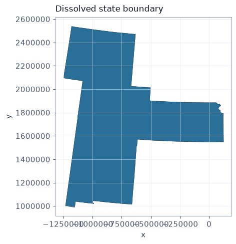
Code
# Dissolve the whole layer with no group key (one output feature).gp_dissolve_02 = dissolve(gp_state)print(f"Features after dissolving the whole layer: {len(gp_dissolve_02)}") # print a short status line# Map the fully dissolved boundary.plot_layer(gp_dissolve_02, "Dissolved state boundary - dissolve()")
Features after dissolving the whole layer: 1
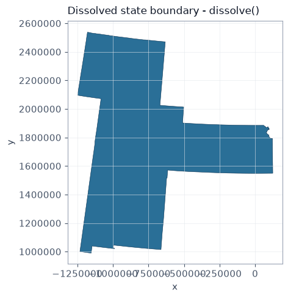
Intersect
Intersect computes the geometric common area of two feature classes.
Intersect
We will use the Yellowstone National Park boundary to find which US states it covers. The park boundary is published by the National Park Service on Data.gov.
Code
# Intersect US states with Yellowstone to find overlapping state pieces.park = read_layer("Yellow_Stone.shp") # Yellowstone National Park boundary# Preview key park attributes.display(park[["UNIT_CODE", "UNIT_NAME", "STATE", "PARKNAME"]])# Keep only the parts of states that overlap the park polygon.park_state = intersect(us_state, park, keep_geom_type=True)print(f"States overlapping Yellowstone: {len(park_state)}") # print a short status line# STATE_1 is the state layer; STATE_2 / UNIT_NAME come from the park.display(park_state[["STATE_1", "STATE_2", "UNIT_NAME"]])
UNIT_CODE
UNIT_NAME
STATE
PARKNAME
0
YELL
Yellowstone National Park
WY
Yellowstone
States overlapping Yellowstone: 3
STATE_1
STATE_2
UNIT_NAME
0
Idaho
WY
Yellowstone National Park
1
Montana
WY
Yellowstone National Park
2
Wyoming
WY
Yellowstone National Park
Code
# Choropleth of Yellowstone pieces colored by state, with in-polygon labels.fig, ax = plt.subplots(figsize=(6, 5)) # create figure and axes# Color each overlapping piece by STATE_1 and draw a legend.park_state.plot(ax=ax, column="STATE_1", cmap="rainbow", edgecolor=EDGE, linewidth=0.6, legend=True)# Label each piece at a representative interior point.for _, row in park_state.iterrows(): point = row.geometry.representative_point() # guaranteed interior label point# Place the state name centered on that point. ax.annotate(str(row["STATE_1"]), (point.x, point.y), ha="center", va="center", fontsize=9)# Apply shared axis styling and title.style_axes(ax, "Yellowstone across state boundaries")fig.tight_layout() # reduce unused whitespaceplt.show() # render the figure in the notebook
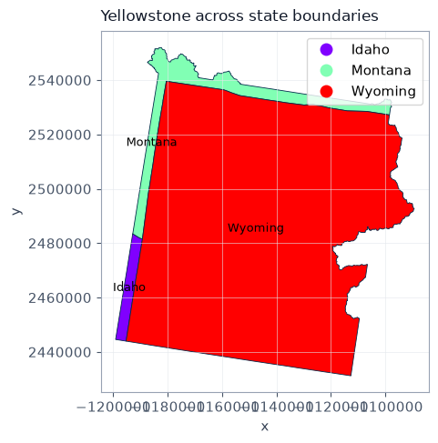
Erase
erase() removes the part of a polygon or line layer that falls inside another polygon layer. The call below erases Kansas from the four-state layer built above.
Code
# Erase Kansas from the four-state layer, leaving CO, NM, and WY.gp_3_state = erase(gp_state, ks, keep_geom_type=True) # drop non-polygon leftovers# Show remaining feature ids and state names.display(gp_3_state[["fid", "STATE"]])# Map the three remaining states.plot_layer(gp_3_state, "States of CO, NM & WY")
fid
STATE
0
1
Colorado
1
3
New Mexico
2
4
Wyoming
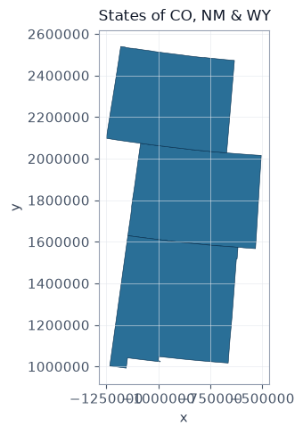
Part 3: Geometry construction
Convex hull
The convex hull, also called the convex envelope or convex closure, is the smallest convex polygon that contains a set of points.
Read the point shapefile, take the coordinates, and close the hull by repeating the first vertex. scipy.spatial.ConvexHull returns that vertex list. convex_hull(..., as_one=True) builds the same polygon from the whole point layer.
Code
# Build a convex hull around Colorado soil-sample points two ways.points = read_layer("CO_SOC_data.shp") # soil sample point locationsprint(f"Soil sample points: {len(points)}")# Preview a few attribute columns.display(points[["ID", "STATE", "COUNTY", "SOC"]].head())# Stack X/Y coordinates into an (n, 2) array for SciPy.xy = np.column_stack([points.geometry.x, points.geometry.y])# Vertex indices of the convex hull in counterclockwise order.hull_index = ConvexHull(xy).vertices# Close the ring by appending the first hull vertex again for plotting.coords = xy[np.append(hull_index, hull_index[0])]# Same hull as a one-feature GeoDataFrame via geolattice.vector.convex_hull.hull_layer = convex_hull(points, as_one=True) # one polygon for the whole layer# Report the hull area in square metres (CRS units).print(f"Hull area from convex_hull(): {hull_layer.geometry.iloc[0].area:,.0f} square metres")
Soil sample points: 136
ID
STATE
COUNTY
SOC
0
1
Colorado
Moffat County
6.439
1
2
Colorado
Montezuma County
2.821
2
3
Colorado
Mesa County
2.760
3
4
Colorado
Mesa County
10.535
4
5
Colorado
Garfield County
5.528
Hull area from convex_hull(): 235,203,106,170 square metres
Code
# Plot soil samples as black points and the convex hull outline in red.fig, ax = plt.subplots(figsize=(6, 5)) # create figure and axes# Scatter the sample coordinates on top (higher zorder).ax.scatter(xy[:, 0], xy[:, 1], s=16, c="black", zorder=3)# Draw the closed hull polyline from the SciPy vertex order.ax.plot(coords[:, 0], coords[:, 1], color="red", linewidth=1.5, zorder=2)style_axes(ax, "Convex hull of Colorado soil samples") # apply shared axis styling and titlefig.tight_layout() # tighten subplot spacingplt.show() # render the figure
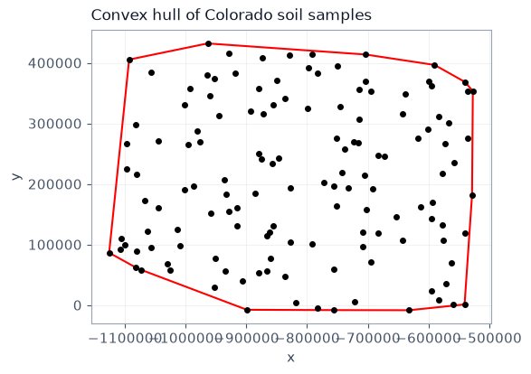
Buffer
Buffering creates an envelope of space around selected features in vector data. It is sometimes called a zone of a specified distance around a polygon, line, or point feature. Buffering is often used for proximity analysis. In this section we create a 100 m buffer around a piece of the Onondaga County road network and a 20 km buffer around the Colorado soil-sample points. Distance is in the units of the layer coordinates. These layers are in a metre-based Albers projection, so 100 means 100 metres.
Buffer polylines
Code
# Buffer Onondaga street centerlines by 100 metres.streets = read_layer("Ononda_Street_PROJ.shp") # projected street segmentsprint(f"Street segments: {len(streets)}")# Distance is in CRS units (metres for this Albers layer).street_buffer =buffer(streets, 100) # one buffer polygon per segmentprint(f"Buffered segments: {len(street_buffer)}")
Street segments: 999
Buffered segments: 999
Code
# Map the 100 m street buffers under the original red centerlines.fig, ax = plt.subplots(figsize=(6, 5))# Semi-transparent fill for the buffer polygons.street_buffer.plot(ax=ax, facecolor=FACE, edgecolor=EDGE, linewidth=0.2, alpha=0.45)# Overlay the source streets in red.streets.plot(ax=ax, color="red", linewidth=0.7)style_axes(ax, "100 m buffer") # apply shared axis styling and titlefig.tight_layout() # tighten subplot spacingplt.show() # render the figure
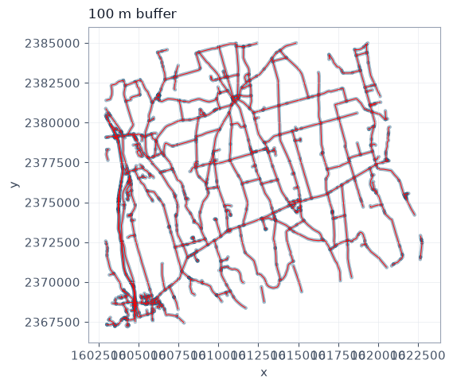
Buffer points
buffer() builds one zone for each feature. Pass dissolve=True to merge those zones into one geometry. The width 20 * 1000 is a 20 km buffer.
Code
# Buffer each soil-sample point by 20 km (20 * 1000 metres).point_buffer =buffer(points, 20*1000) # 20 km radius in CRS unitsprint(f"Point buffers: {len(point_buffer)}")
Point buffers: 136
Code
# Map the 20 km point buffers with the sample points on top.fig, ax = plt.subplots(figsize=(6, 5))# Light fill for the buffer circles.point_buffer.plot(ax=ax, facecolor=FACE, edgecolor=EDGE, linewidth=0.3, alpha=0.35)# Red markers for the original sample locations.points.plot(ax=ax, color="red", markersize=8, marker="o")style_axes(ax, "20 km buffer") # apply shared axis styling and titlefig.tight_layout() # tighten subplot spacingplt.show() # render the figure
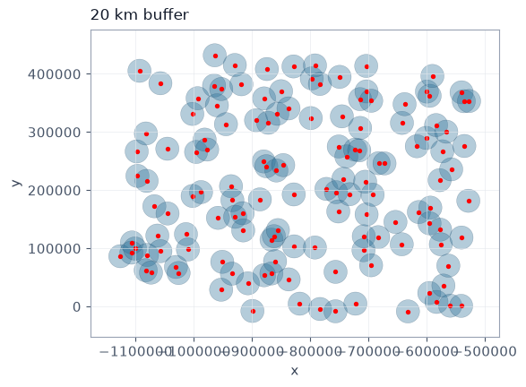
Summary
This exercise applied the main vector geoprocessing operations to US states and counties, the Yellowstone boundary, Colorado soil-sample points, and a piece of the Onondaga County road network.
Operation
What it does
Example in this notebook
Attribute filter
Keeps features whose attributes match a condition, with geometry and attributes unchanged
Counties whose STATE is New York
Clip
Cuts features to a mask, like a cookie cutter, and keeps the attribute table of the layer being cut
US counties cut to the New York boundary
Intersect
Keeps each overlapping pair and the attributes of both layers. Shared field names receive _1 and _2
States that overlap Yellowstone National Park
Union
Builds the overlay of two layers: the overlap, plus the part unique to each input
Colorado joined with Kansas
Row bind
Stacks layers that share one attribute table into a single layer
pandas.concat of the four state shapefiles
Dissolve
Unions geometries that share a group. With no by argument, the whole layer becomes one feature
The four states dissolved into one polygon
Erase
Removes the part of a layer that falls inside another polygon
Kansas removed from the four-state layer
Convex hull
Builds the smallest convex polygon that contains a set of points
Hull around the Colorado soil-sample points
Buffer
Builds a zone of a given distance around each feature. dissolve=True merges those zones
100 m around streets and 20 km around sample points
keep_geom_type=True drops points and lines created where polygons only touch along a border. Buffer distance is in the units of the layer coordinates. These layers use a metre-based Albers projection, so 100 is 100 metres and 20 * 1000 is 20 kilometres.
Clipping, union, dissolve, intersect, erase, convex hull, and buffer cover the usual questions asked of vector data: which features fall in an area, how layers combine, which features share an attribute, where two layers overlap, what remains after one area is removed, what polygon encloses a set of points, and what lies within a set distance.
The same functions work on polygons, lines, and points. Read each shapefile with open_vectors_data(), then pass the resulting layer to clip(), union(), dissolve(), intersect(), erase(), convex_hull(), or buffer(). Check that both layers share a projected coordinate reference system before measuring a buffer or comparing areas, because the distance and the area are expressed in the units of that system.
Further reading
GeoLattice
open_vectors_data() reads the shapefiles in Data/00_shared/vector_data/USA.
clip(), union(), dissolve(), intersect(), erase(), convex_hull(), and buffer() are in geolattice.vector.
State, county, park, point, and street shapefiles are in Data/00_shared/vector_data/USA. The four state boundaries are in Data/00_shared/vector_data/USA/GP_STATE.
The Yellowstone National Park boundary is published by the National Park Service on Data.gov.